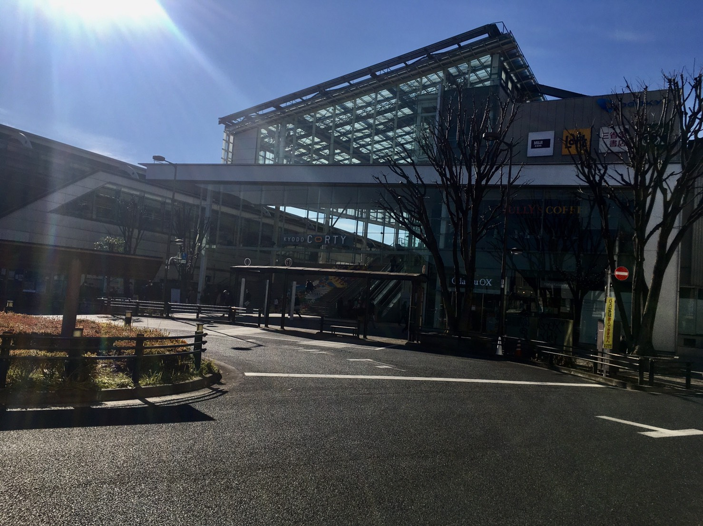
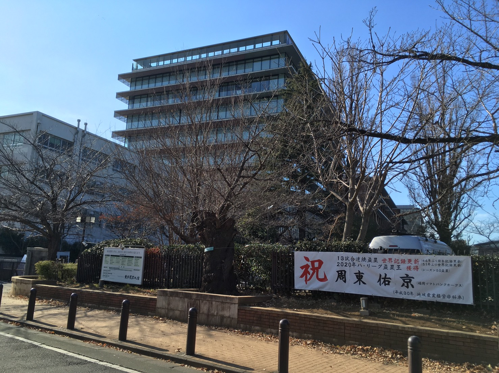
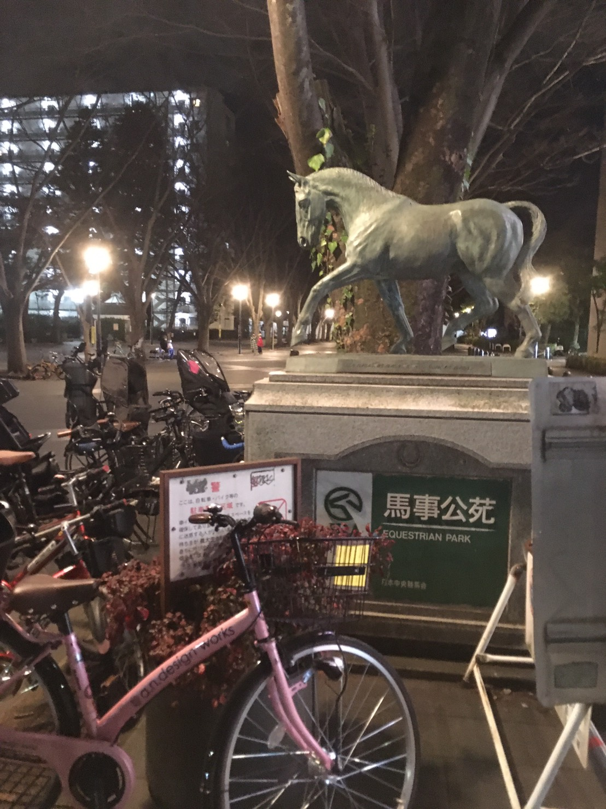

経堂
| 愛称 | 経堂、経堂迷路、本の駅 |
|---|---|
| 有名人・著名人 | えなりかずき |
| 周辺施設 | 経堂コルティ 東京農業大学 馬事公苑 |
| 愛称 | 経堂、経堂迷路、本の駅 |
|---|---|
| 有名人・著名人 | えなりかずき |
| 周辺施設 | 経堂コルティ 東京農業大学 馬事公苑 |

経堂コルティは長らく経堂のランドマークタワーであった経堂ジョイフルの跡地に2011年にオープン。
京都駅ほどではないが、幅10メートル大階段が特徴的。市民の憩いの場である。

応援団が大根を持って応援する大根踊りが有名な東京農業大学。
毎年11月のはじめには収穫祭という学園祭があり、大根の無料配布や学生が作った味噌や醤油、花卉などの販売もある。
経堂駅から徒歩15分

もともと東京オリンピックの馬術競技会場であった馬事公苑。
馬術競技大会の会場にもなるので、運がよいと競技大会も見ることができる。芝生エリアもありピクニックにも最適。
経堂駅から徒歩17分
※現在は整備工事のため休苑中